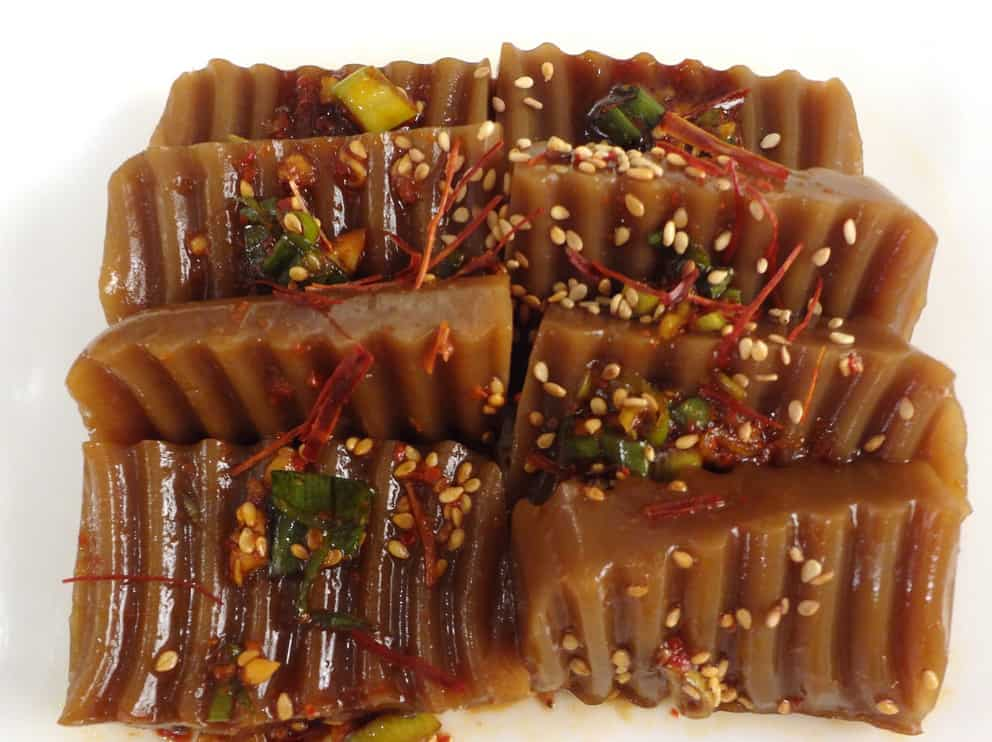

Acorn Jelly Recipe

Acorn jelly is a delicious Korean dish that is usually eaten as a side dish.
Ingredients
- 1/2 cup acorn starch
- 3 cup water
- 1/2 tsp fine sea salt
- 1/2 tsp perilla oil or sesame oil (If possible, I recommend using perilla oil, as it enhances the flavor
of dotorimuk significantly.)
Steps
- In a medium-sized pot, combine the acorn starch with water. Stir continuously while cooking over medium
heat.
-
As the mixture begins to thicken (it takes about 3 minutes for induction and 4 minutes 30 seconds for a
gas stove), add the salt. Reduce the heat to low and continue stirring for 20 minutes.
- Incorporate the perilla oil (or sesame oil) and cook for an additional 10 minutes over low heat,
continuing to stir.
-
Transfer the acorn jelly into a container and let it cool at room temperature for 1 hour. After cooling,
cover with the lid and refrigerate for at least 4 hours before using.